Unusual Animals
<
>
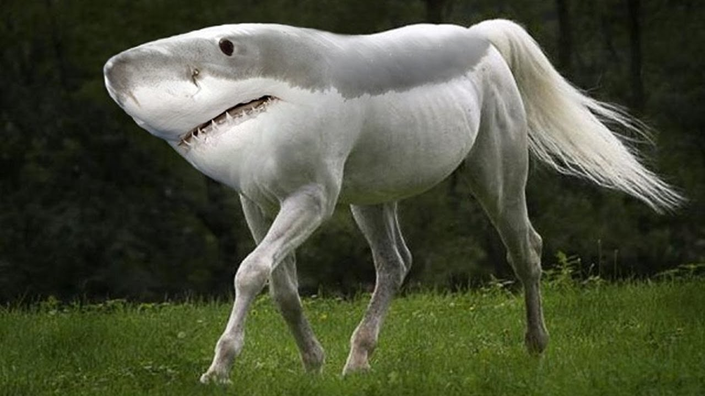
Hi, welcome to a tour of some of the strangest animals you will ever see. And "no" fortunately the animal obove is not real.
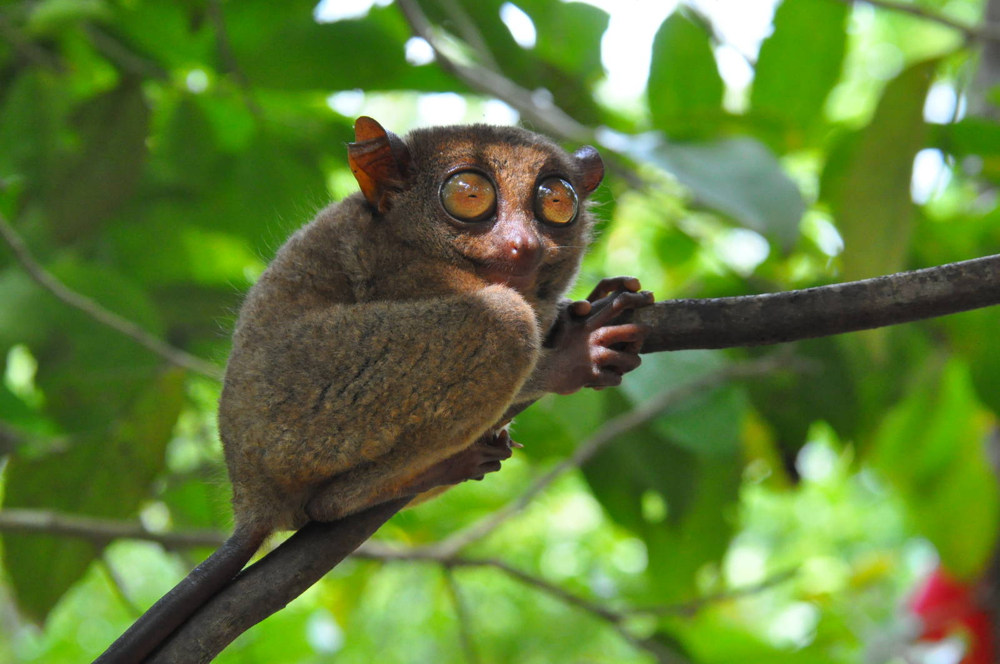
Starting off with the Philippine Tarsier, it's hard for them not to look surprised
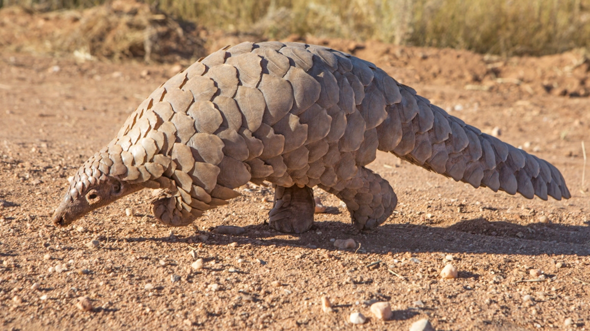
Doesn't that look like an giant armadillo, it's actually a Pangolin
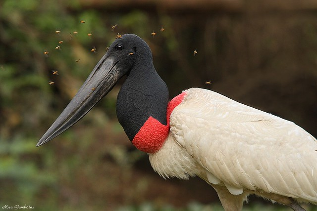
Take a look at the largest flying bird in the Americas, the Jabiru Stork
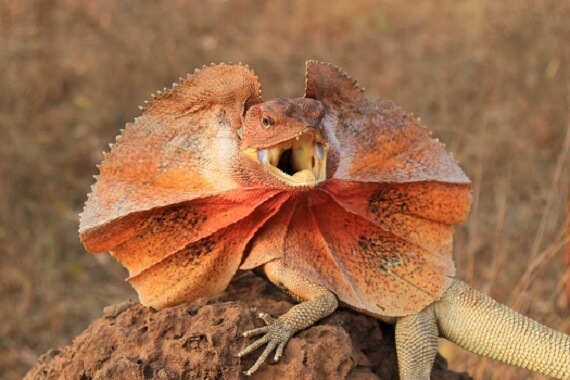
Next up is the Frilled-Neck Lizard, I can't be the only one who thinks of the dinosaur from Jurrasic Park while looking at this
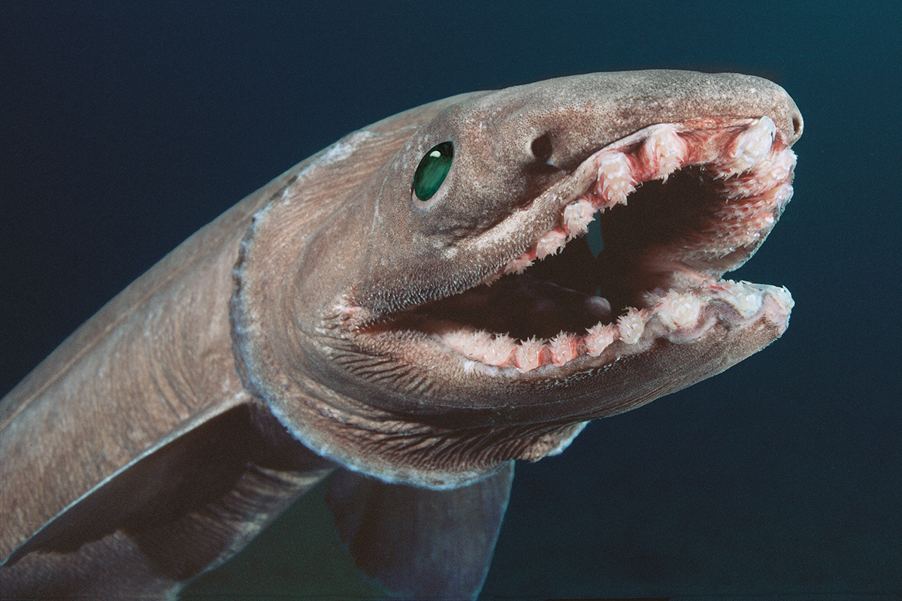
Speaking of dinosaurs, the frilled Shark has been swimming the Earth's depths since the time of the dinosaurs
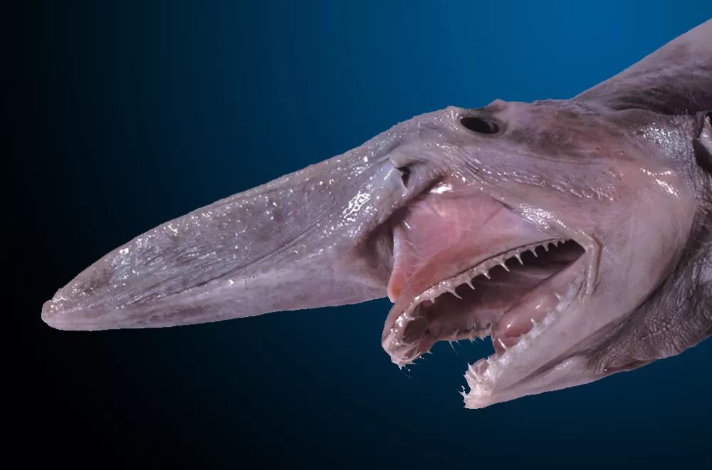
Yikes. Now that does actually look like a dinosaur, it's actually a Goblin Shark. Definetely see the goblin in it
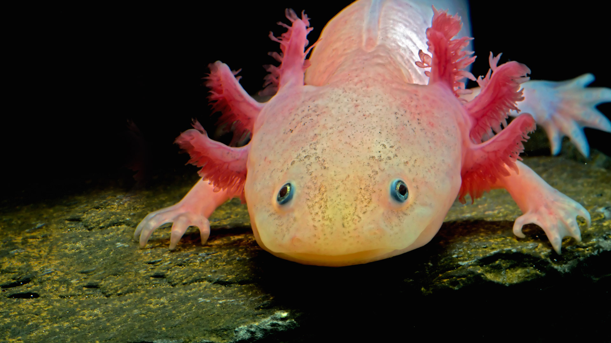
An axolotl, it's pink! You wanna know what else is pink?
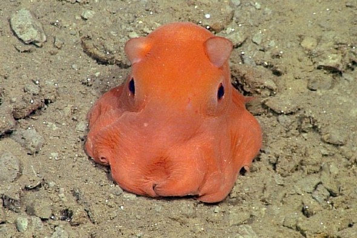
The Dumbo Octopus! but wait... there's one more
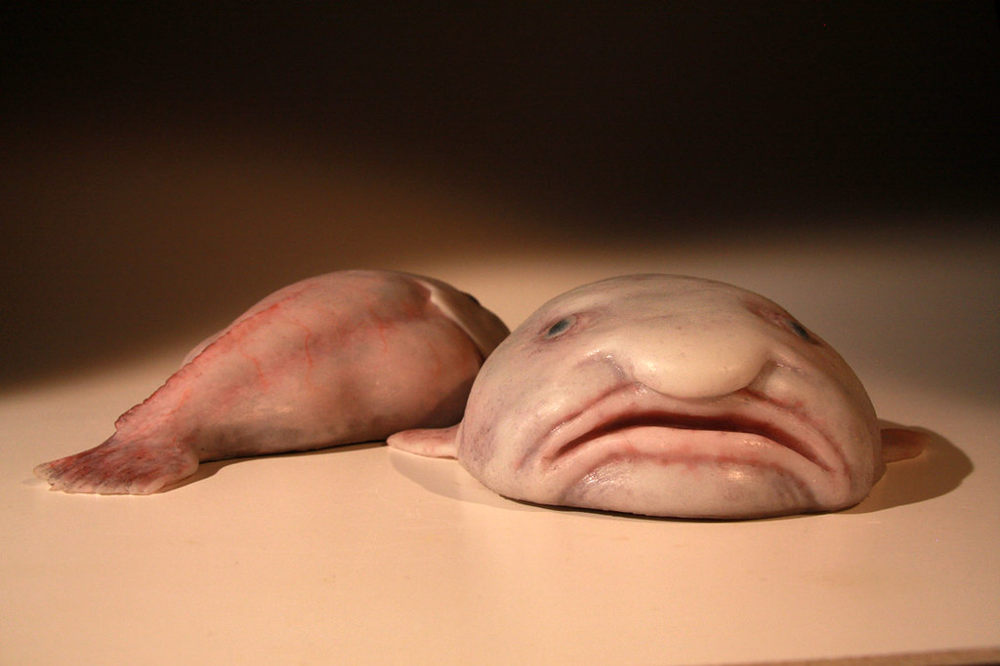
The blobfish!
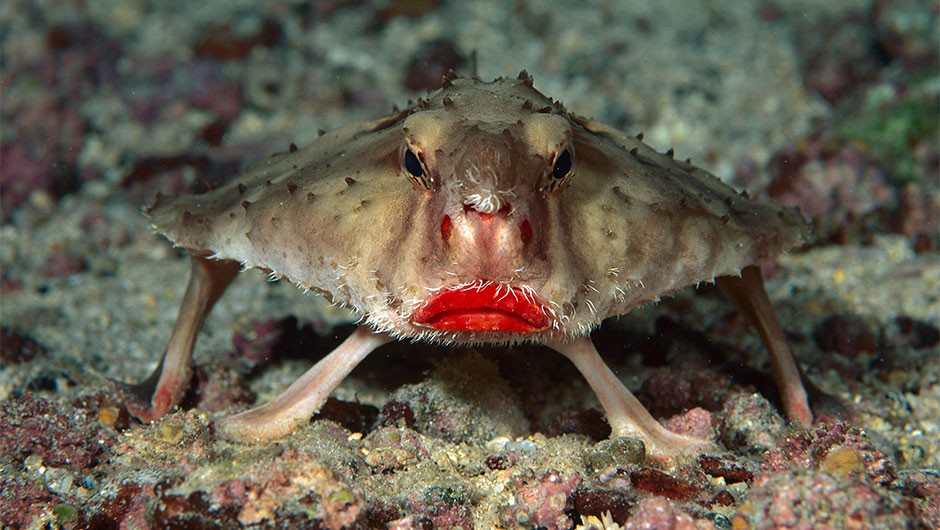
Now for my personal favorite, the Red Lip Batfish. She's always photo ready